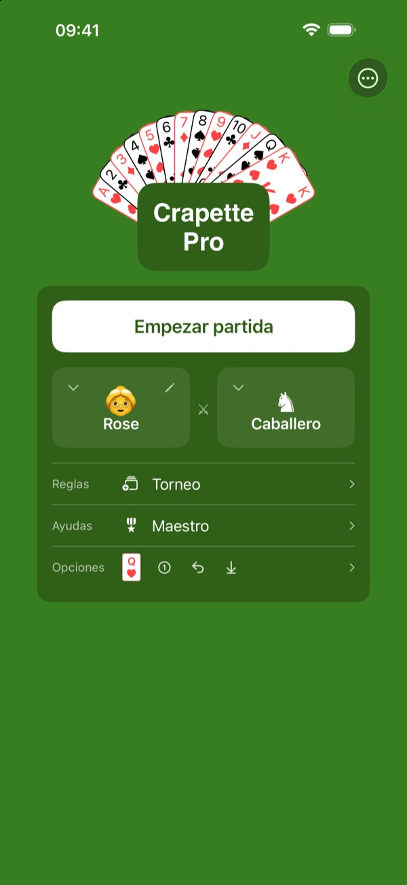
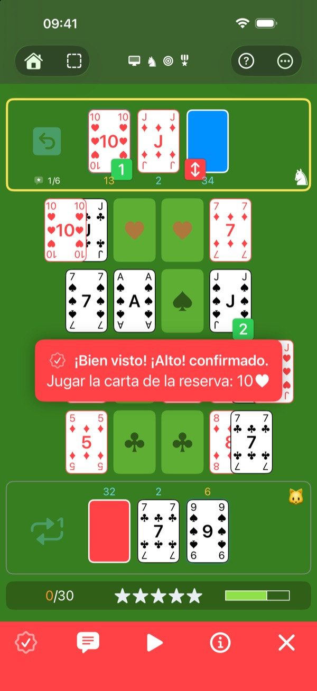
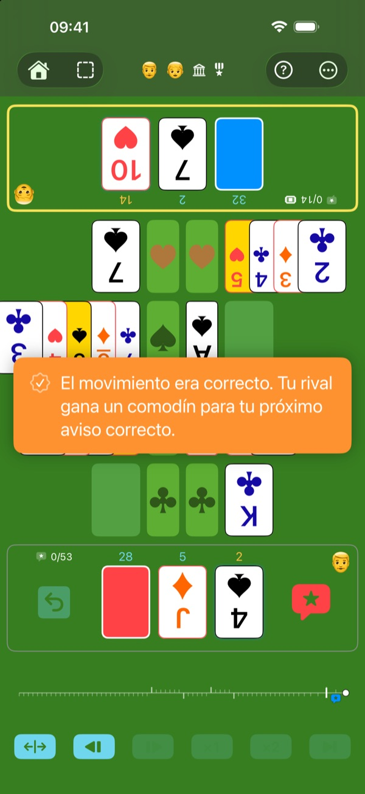
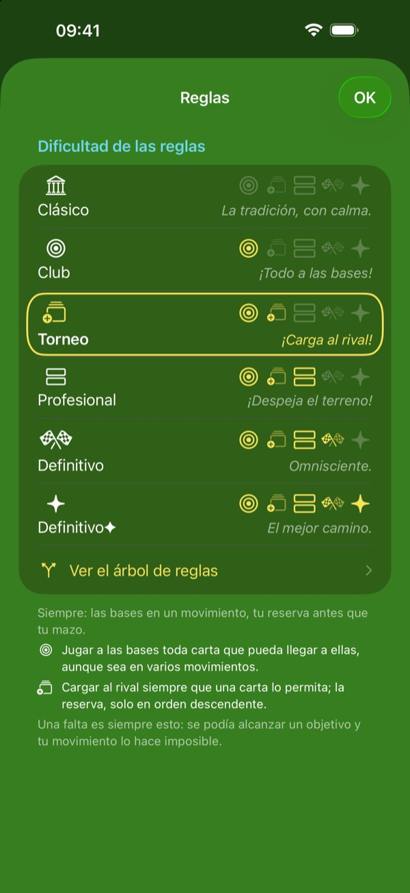
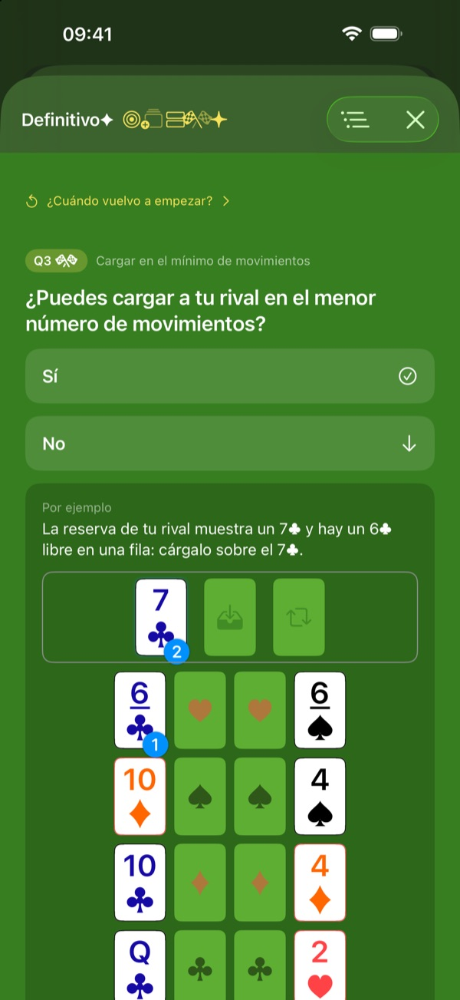
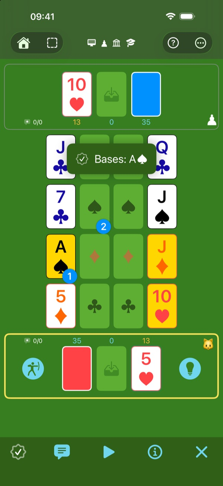
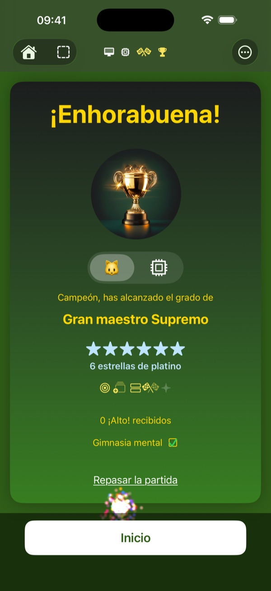
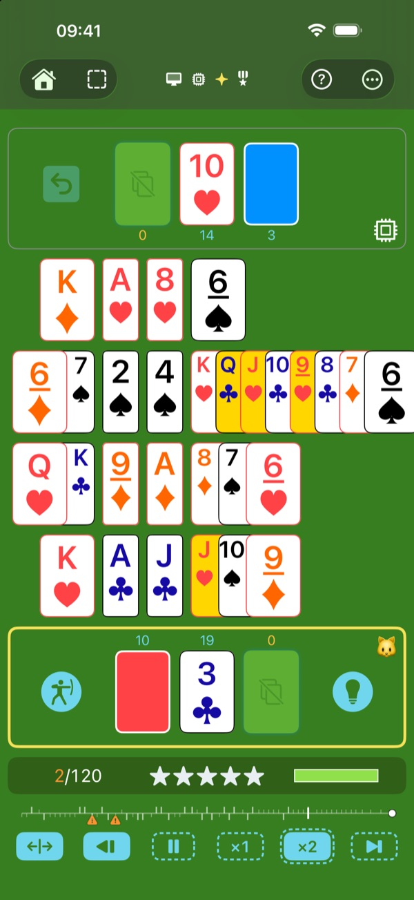
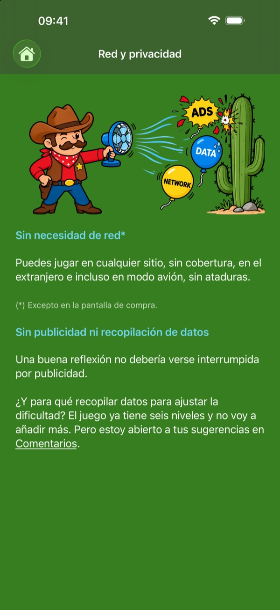
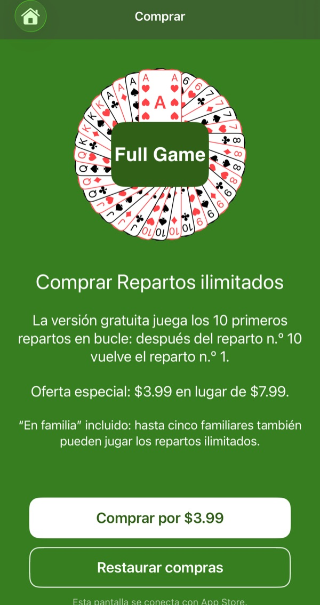

El juego de tu infancia
Sin que la abuela haga trampas
Analiza, traza tu estrategia, vence al juego y conviértete en Gran maestro.

El crapette que conoces. Forjado al calor de la competición.
Ya conoces el crapette —Russian Bank en inglés—: gana quien primero se deshace de todas sus cartas. Aquí está, tal cual, en el nivel Clásico.
Para afinar la observación y la reflexión, los niveles siguientes añaden poco a poco reglas más exigentes. En cada movimiento, esas reglas forman un rompecabezas: resuélvelo y te libras de un ¡Alto!; resuélvelos todos y aspirarás a las mejores puntuaciones.

Compón tu partida ideal.
Seis rivales: alguien frente a ti, en el mismo dispositivo, con el arbitraje que elijas; o el ordenador, desde el Escudero, que se equivoca a menudo, hasta el Algoritmo, que nunca falla.
Seis niveles de reglas, desde el juego oficial hasta Definitivo✦.
Tres niveles de ayuda: cuantas menos ayudas uses, más valiosas serán tus estrellas, y más difíciles de conseguir.
En total, 6 × 6 × 3 = 108 formas de jugar.

Un ordenador que se equivoca, a propósito.
El Escudero, el Caballero y el Rey cometen faltas, a menudo, a veces o rara vez: te toca detectarlas y cantar ¡Alto!, como contra un jugador de verdad. Y cuando quieras tomarte un respiro, el Algoritmo nunca se equivoca: solo tienes que verlo jugar.

Cara a cara, sin discusiones.
Dos jugadores, un solo dispositivo entre los dos y el tablero orientado hacia cada uno. Detecta la falta del otro y canta ¡Alto!: el ordenador lo comprueba, sin discusión posible, o arbitra por su cuenta, si lo prefieres. Pero cuidado: un aviso erróneo le da un comodín a tu rival.
Nietos con buen ojo, abuelos con experiencia: todos en igualdad de condiciones.

Cada movimiento es un rompecabezas.
En el nivel Clásico, casi todos los movimientos están permitidos. En cada nivel, una regla más reduce los movimientos permitidos, hasta que solo queda el mejor camino. Cada movimiento se convierte en un rompecabezas: te toca encontrar la solución.
- Clásico — el crapette tradicional, con sus dos reglas oficiales —las bases en un movimiento y la reserva antes que el mazo—.
- Club — llevar a las bases toda carta que pueda llegar a ellas.
- Torneo — cargar la reserva del rival.
- Profesional — liberar el máximo de filas posible.
- Definitivo — alcanzar el objetivo prioritario en el mínimo de movimientos.
- Definitivo✦ — entre dos caminos igual de cortos, tomar el que también respeta las reglas de menor prioridad.

Cada movimiento se explica.
Cada ¡Alto! que recibes y cada pista que pides te muestran el movimiento que debes jugar, y la regla que lo exige.
El árbol de reglas muestra cómo encajan las reglas: una pregunta cada vez, en el orden de tu nivel, hasta el movimiento correcto.

Ejercita la mente, de forma sana, a cualquier edad.
Observar, pensar, optimizar tu movimiento entre los posibles: cada partida pone a trabajar la mente. Sin cronómetro, te tomas tiempo para pensar, y la dificultad se adapta a ti. Y todo jugando: te entrenas sin darte cuenta.
El juego que una madre o un padre puede ofrecer a sus hijos: reflexión, sin efectos parpadeantes, sin adicción. Las partidas exigen un esfuerzo real: después de una o dos, los niños salen corriendo a jugar fuera.

El campo de entrenamiento. Aquí, el objetivo es aprender.
Empieza en el nivel Clásico, como Estudiante, con todas las ayudas. Las cartas objetivo muestran las metas posibles. La pista te muestra el objetivo prioritario y el primer movimiento para alcanzarlo. Mejor movimiento juega por ti. ¿Dudas con un botón? Toca “?”: cada elemento del tablero se explica. Afina tu sentido táctico en el campo de entrenamiento.
Como una espada de madera para entrenar, ¡Uy! te deja encajar golpes sin que duelan demasiado: repites tu movimiento, pero la falta sigue contando.

Tu progreso, en grados y estrellas.
La puntuación está ahí para motivarte y medir tu progreso. Consigue grados cada vez más prestigiosos y valiosas estrellas.
La recompensa suprema: el platino, por una partida sin faltas.

Una arena bajo los focos, para no perderte ningún detalle.
Un juego pensado para leerse bien: ni la abuela tendrá excusa.
Elige tus cartas: estándar, alta visibilidad o alta visibilidad en las cuatro esquinas. Cuatro palos con colores y formas bien distintos: todo se lee bien, incluso en una pantalla pequeña.

Un juego con cuerpo de atleta.
- Rápido — en muy poco tiempo, el motor sabe si tu movimiento es el correcto.
- Ligero — unos 13 MB, se descarga en un instante.
- Autónomo — no necesita conexión para jugar (salvo al hacer una compra, claro).
- Discreto — el juego no recoge ningún dato.
- Sin publicidad — una buena reflexión no debe interrumpirse.
- Sin adicción — ni notificaciones, ni rachas que mantener, ni obligación de jugar. Vuelves cuando te apetece.

El arenero sin límites.
Sin suscripción. Todo el juego se puede probar gratis, sin límite de tiempo: todos los niveles, todos los rivales, todas las ayudas. Construye tantos castillos de arena como quieras, pero sobre los diez primeros repartos, que vuelven en bucle.
Una sola compra abre nuevos repartos, sin fin.